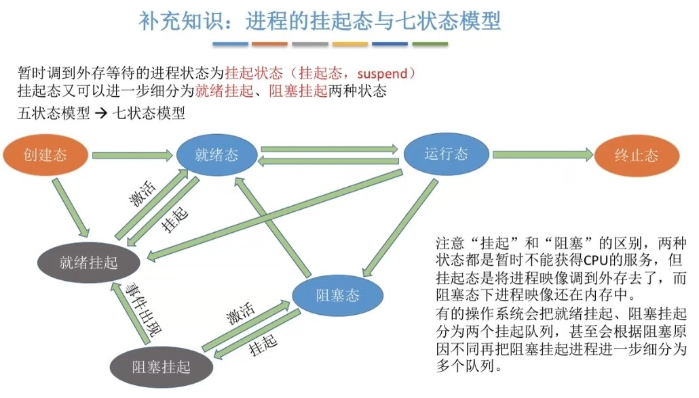

1.概念
按某种算法选择一个进程将处理机分配给它
2. 层次
2.1三个层次
高级调度（作业调度）
- 按照某种规则，从后备队列中选择合适的作业将其调入内存，并为其创建进程
- 每个作业只调入一次，调出一次
- 作业调入时会建立PCB，调出时才撤销PCB
中级调度（内存调度）
- 按照某种规则，从挂起队列中选择合适的进程将其数据调回内存
- 暂时调到外存等待的进程状态为挂起状态
- 被挂起的进程PCB会被组织成挂起队列
低级调度（进程调用）
- 按照某种规则，从就绪队列中选择一个进程为其分配处理机
2.2三层调度的联系、对比
高级调度
- 外存 ---> 内存（面向作业）
- 发生频率：中等
中级调度
- 外存 ---> 内存（面向进程）
- 发生频率：中等
低级调度- 内存 ---> CPU
- 发生频率：最高
补充
- 为减轻系统负载，提高资源利用率，暂时不执行的进程会被调到外存，从而变为“挂起态”
- 七状态模型：在五状态模型的基础上加入了“挂起队列”和“阻塞队列”两种状态
3. 时机
3.1什么时候需要进程调度？
主动放弃
- 进程正常运行
- 运行过程中发生异常而终止
- 主动阻塞（如 等待I/O）
被动放弃
- 分给进程的时间片用完
- 有更紧急的事情需要处理（如 I/O中断）
- 有更高优先级的进程进入就绪队列
3.2什么时候不能进行进程调度？
- 在处理中断的过程中
- 进程在操作系统内核程序临界区中
- 原子操作过程中（原语）
4. 切换过程
4.1“调度”和“切换”的区别
- 狭义：从就绪队列中选中一个要运行的进程
- 广义：包含选择一个进程和进程切换两个步骤
4.2切换过程
- 对原来运行的进程各种数据的保存
- 对新的进程各种数据的恢复
4.3重要结论
进程调度、切换是有代价的，并不是调度越频繁，并发度就越高
5. 方式
非剥夺调度方式（非抢占式）
- 只能由当前运行的进程主动放弃CPU
- 实现简单，系统开销小
- 但是无法及时处理紧急任务，适合早期的批处理系统
剥夺调度方式（抢占式）
- 可由操作系统剥夺当前进程的CPU使用权
- 可以优先处理更紧急的进程，也可以实现各进程按时间片轮流执行的功能
- 适合于分时操作系统、实时操作系统
6. 进程七状态模型
